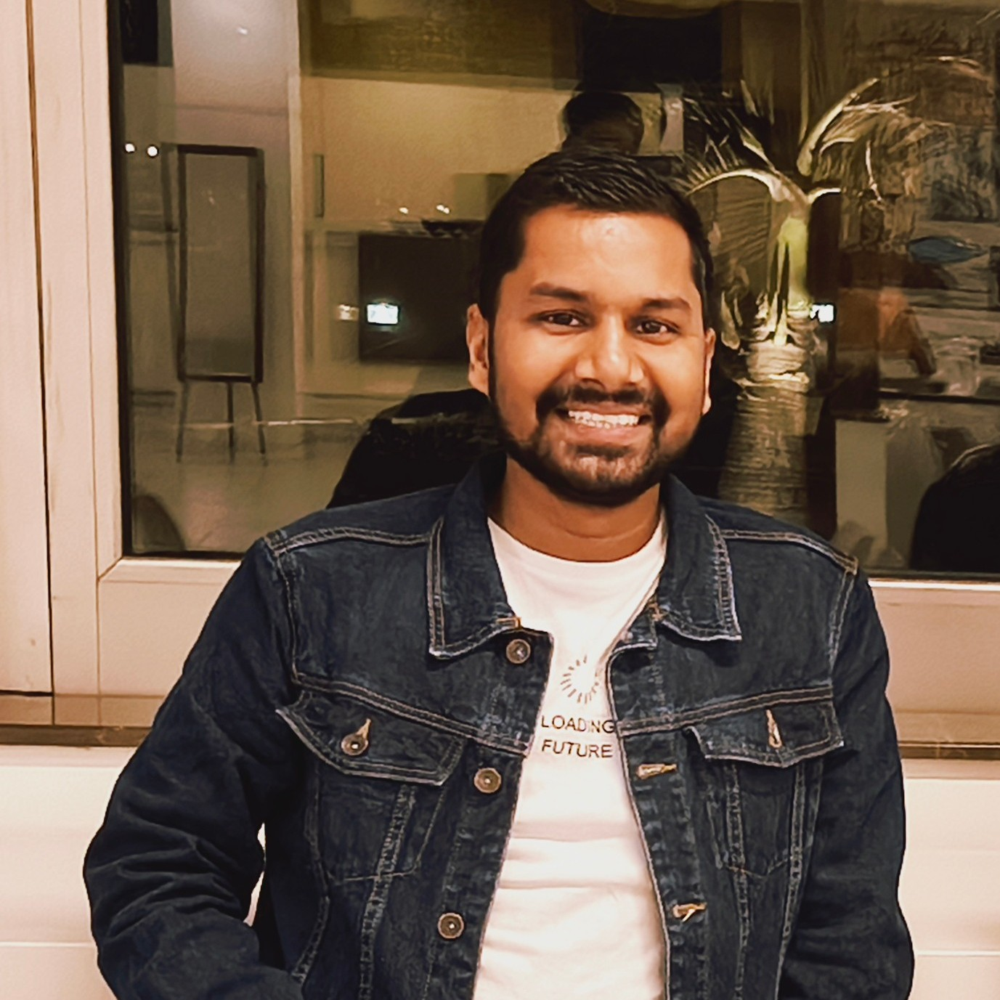

Portfolio

JBIS Project
Description: Designed and developed multiple APIs to enable seamless CRUD operations across systems. Highlights include:
- Optimized API endpoints for minimal latency and high throughput
- Automated invoice creation with tax, discounts, and payment integration
- Developed Kafka producers/consumers for real-time streaming
- Performed thorough testing using Postman and WRK tools

Hadoop Project
Description: Successfully deployed Hadoop 3.3.6 clusters for large-scale document storage and processing. Highlights include:
- Managed terabytes of data using HDFS for distributed storage
- Designed workflows for efficient document ingestion and retrieval
- Ensured high availability and fault tolerance in multi-node clusters